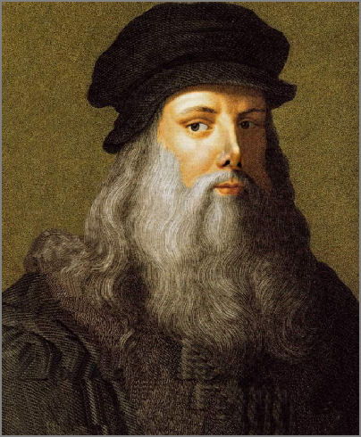

ค.ศ. 1452 – 1519
เกิดในหมู่บ้านวินชี ใกล้เมืองฟลอเรนซ์ เขาเป็นบุตรนอกสมรสของทนายความชื่อดังและหญิงชาวนา ความสามารถที่หลากหลายของเขาเริ่มฉายแววตั้งแต่เป็นศิษย์ของ Verrocchio
เขาไม่ได้เป็นเพียงจิตรกร แต่ยังเป็นนักวิทยาศาสตร์ นักประดิษฐ์ และวิศวกร บันทึกของเขาเต็มไปด้วยภาพกายวิภาคศาสตร์และเครื่องจักรที่ล้ำหน้ายุคสมัยไปหลายร้อยปี
จาก Mona Lisa ถึง Vitruvian Man แทบไม่มีผลงานชิ้นไหนของศิลปินที่ชื่อว่า ลีโอนาโด ดาวินชี (Leonado da Vinci) ที่ไม่มีใครไม่รู้จัก แม้หลังจากมรณกาลกว่า 500 ปีของเขา ผู้คนในยุคสมัยปัจจุบันก็ยังไม่หยุดศึกษาทุกสิ่งอย่างที่เกี่ยวข้องกับดาวินชี มนุษย์ในยุคสมัยใหม่ยังคิดค้นประดิษฐ์เทคโนโลยีล้ำสมัยออกมาเพื่อสแกนศึกษาผลงานของเขา นักประวัติศาสตร์ยังคงแกะรอยเรื่องราวของเขาเพื่อย้อนเวลากลับไปค้นหาแง่มุมที่ไม่เคยถูกเปิดเผยมาก่อนของอัจฉริยะแห่งยุคฟื้นฟูศิลปวิทยาการ (Renaissance) ผู้นี้ แล้วอะไรกันที่ทำให้ชีวิตและผลงานของศิลปินผู้มีชีวิตอยู่ในช่วงศตวรรษที่ 15 ยังคงส่งอิทธิพลและทำให้คนทั้งโลกหลงใหลได้จนถึงปัจจุบัน? เหตุใดกันเขาจึงได้ชื่อว่าเป็นหนึ่งใน Renaissance Man หรือมนุษย์ยุคฟื้นฟูศิลปวิทยาการผู้มีความสามารถรอบด้านที่เป็นทั้งนักวิทยาศาสตร์ นักปรัชญา วิศวกร และนักคณิตศาสตร์ เนื่องในโอกาสที่สัปดาห์นี้จะเป็นวันครบรอบ 569 ปี ชาตกาลของ ลีโอนาโด ดาวินชี ผู้ซึ่งเกิดเมื่อวันที่ 14 (หรือ 15 ไม่แน่ชัด) เมษายน ค.ศ. 1452 GroundControlTH จึงจะขอใช้พื้นที่คอลัมน์ The Art of Being An Artist ประจำสัปดาห์นี้ พาผู้อ่านไปสำรวจแต่ละแง่มุมของความเป็น ‘Renaissance Man’ ของดาวินชี แต่เราจะไม่เล่าประวัติชีวิตของเขาเหมือนศิลปินคนอื่น ๆ ที่ผ่านมา เพราะวันเกิดของดาวินชีทั้งที เราจึงจะขอพาทุกคนไปสำรวจความเป็นดาวินชีผ่าน 9 ผลงานในแต่ละช่วงชีวิตของเขากัน!